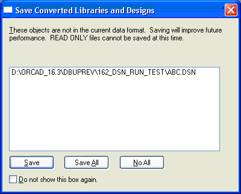

If you have a v16.3 design that contains an external
reference to a v16.2 design and you close Capture, the
application prompts you to upgrade the externally
referenced design.

Figure H-9
The Save Converted Libraries and Designs dialog displays
the list of the externally referenced designs.
Select specific design from the list and choose :
- Save to upgrade the selected designs.
- Save All to upgrade all the listed designs.
- No All to not upgrade any of the listed designs.
You can check the Do not show this box
again option to retain your current
selection.
For example, if you select this option and then choose Save
All, then whenever this scenario arises, this dialog box
will not be displayed and the Save All option will be
executed.
If you open a v16.3 design with a v16.2 externally referenced design and you descend to the v16.2 design (by choosing the Descend Hierarchy command), the v16.2 design is upgraded to v16.3 and a backup of the v16.2 design is made in the same location as the original v16.2 design.